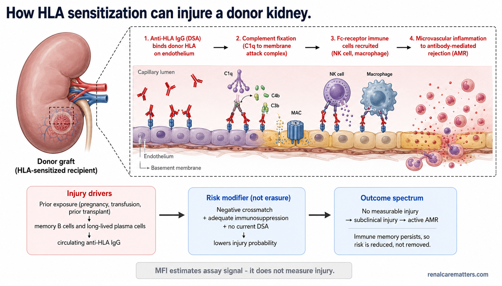
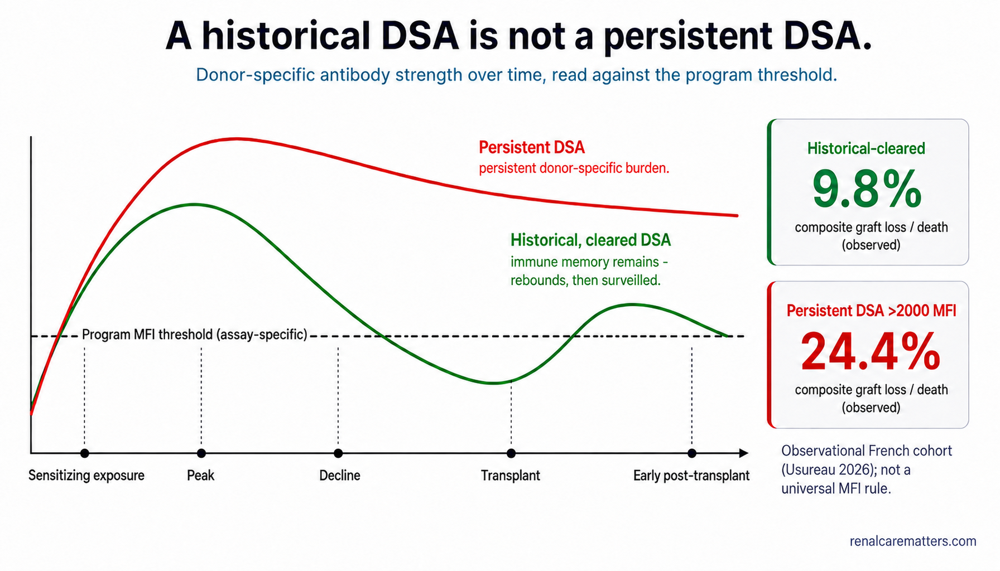
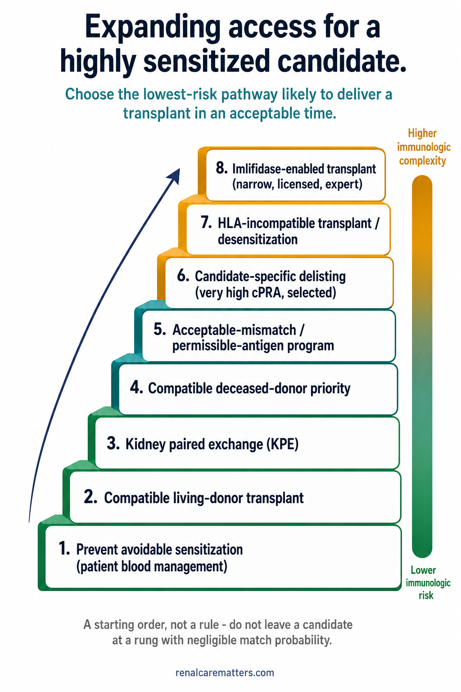

Two questions, not one
In a highly sensitized candidate, the calculated panel-reactive antibody (cPRA) tells you how hard it will be to find any compatible donor; the donor-specific antibody (DSA) and the crossmatch tell you the risk of proceeding with one particular donor. These are different problems, and a safe access strategy has to optimize both at once. Almost every avoidable error in this population comes from collapsing the two — treating a very high cPRA as if it were a rejection risk, or treating a low cPRA as if it guaranteed donor-specific safety.
This guide is clinician decision-support and referral guidance. It is not a consent script, a desensitization protocol, or an organ-acceptance directive. Its aim is that a general nephrologist, internist, dialysis physician, or transplant coordinator who does not work daily in a histocompatibility laboratory can read an immunologic record, understand what each number does and does not mean, know which access strategy sits where in the hierarchy, and know which decisions must stay inside a transplant center with an accredited human leukocyte antigen (HLA) laboratory.
The one sentence to carry
cPRA describes access — the fraction of donors a candidate is expected to be incompatible with. DSA and crossmatch describe donor-specific risk — whether this donor carries a target this recipient's antibody will attack. A candidate can have cPRA 100% yet no DSA to a rare compatible donor; another can have a lower cPRA yet a strong DSA to the donor being offered right now.
The two axes combine into a simple triage that orients every later decision:
| Low donor-specific risk (no/low current DSA, negative crossmatch) | Higher donor-specific risk (persistent strong DSA and/or positive crossmatch) | |
|---|---|---|
| Lower access difficulty (lower cPRA) | Compatible pathway — proceed on standard assessment; add no unnecessary immunologic risk. | Seek another donor, or resolve the laboratory discordance before proceeding. |
| Severe access difficulty (very high cPRA) | Prioritize compatible allocation, acceptable-mismatch programs, or kidney paired exchange; this candidate is hard to match but not high-risk with a compatible donor. | Formal multidisciplinary risk–benefit conference; consider delisting or desensitization only after lower-risk routes are shown to be unlikely to deliver a transplant in an acceptable time. |
Scope banner
This is education for clinicians. Organ acceptance, antigen delisting, desensitization, induction immunosuppression, and post-transplant monitoring are decisions for a transplant center and its histocompatibility laboratory, with prospective governance and rapid crossmatch capability. Nothing here — no cPRA value, no fluorescence number, no checklist — should be used to accept or decline a specific organ.
Take-away. Before you look at any single result, decide which question it answers: is this an access number (cPRA) or a donor-specific risk number (DSA, crossmatch)? They are optimized by different strategies and must not be traded against each other.
What makes a candidate sensitized — and how to prevent it
Sensitization is immunologic memory of foreign HLA. It is acquired through three classical exposures — pregnancy (fetal paternal HLA), transfusion of cellular blood products, and a previous transplant — and each repeat exposure deepens it. The failing or failed allograft is a potent and under-recognized sensitizing context: allograft nephrectomy and, especially, withdrawal of maintenance immunosuppression after graft failure can unmask and amplify anti-HLA antibody, converting a re-transplant candidate into a highly sensitized one. This matters because the mechanism is not simple antibody accumulation — long-lived plasma cells and memory B cells persist, so an antibody that has fallen below the detection threshold can rebound rapidly on re-exposure. Infection and vaccination are not HLA alloexposures and do not sensitize, though an intercurrent inflammatory event can transiently perturb antibody assays and should be noted when interpreting a sample.
Because endowment of donors is fixed and memory is durable, the most reliable lever a referring physician holds is prevention of avoidable sensitization. In a transplant-eligible patient with chronic kidney disease (CKD), that means treating anemia with iron and erythropoiesis-stimulating agents rather than reflexive transfusion, applying patient blood management, and reserving cellular products for genuine indications. A unit of blood given casually to a young dialysis patient can narrow their donor pool for life.
Sensitization intake — send this with every referral
A complete pregnancy history; every transfusion with approximate dates; the HLA typing and rejection history of any prior graft; any transplant nephrectomy; any immunosuppression taper or withdrawal after graft failure; any sensitizing procedure since the last stored serum; and current treatments that alter antibody testing — intravenous immunoglobulin (IVIG), rituximab, or plasma exchange. Note active infection or inflammation at the time of sampling.
Take-away. The cheapest way to help a highly sensitized candidate is to have prevented the sensitization — avoid the nonessential transfusion, and never stop a failed graft's immunosuppression without a transplant-center conversation.
The vocabulary that prevents errors
Most miscommunication between a referring clinician and an HLA laboratory is vocabulary drift — the same word carrying a stronger meaning at the bedside than it does at the bench. The table below fixes each term to what it does mean and, just as importantly, what it does not.
| Term | Plain clinician meaning | What it does not mean |
|---|---|---|
| PRA (panel-reactive antibody) | Historical measure of reactivity against a cell panel | Not portable across panels or eras |
| cPRA / cRF (calculated PRA / calculated reaction frequency) | A population-frequency estimate: the share of donors carrying ≥1 of the candidate's listed unacceptable antigens | Not the probability of rejection |
| Unacceptable antigen | An HLA specificity the program elects to avoid in allocation | Not an immutable biological fact — it is a program choice |
| Acceptable / permissible antigen | An antigen allowed under a defined allocation program | Not zero risk |
| DSA (donor-specific antibody) | Recipient antibody directed at a specific donor's HLA | Not synonymous with rejection |
| MFI (mean fluorescence intensity) | A semiquantitative fluorescence signal from a bead assay | Not antibody titer, concentration, or a universal cutoff |
| Virtual crossmatch | Predicted compatibility from donor HLA typing plus the recipient's antibody history | Not a physical mixing test |
| Flow crossmatch | Detects recipient immunoglobulin G (IgG) binding to donor lymphocytes; more sensitive than complement-dependent cytotoxicity | A positive result does not by itself name the target |
| Complement-dependent cytotoxicity (CDC) crossmatch | Detects complement-fixing antibody that lyses donor cells | A negative result does not exclude lower-level DSA |
| Epitope / eplet | The structural feature an antibody actually recognizes, often shared across HLA molecules | Eplet mismatch is not yet a stand-alone organ-acceptance rule |
| Delisting | Removing selected HLA antigens from the unacceptable list | Does not lower antibody in the bloodstream |
| Desensitization | Therapy intended to reduce or control antibody-mediated incompatibility | Does not confer durable tolerance |
How antibody injures a graft — the chain, and the number that does not measure it
HLA molecules are inherited cell-surface identity labels; a donor kidney carries a particular set, and a sensitized recipient may hold antibody that reads some of those labels as foreign. When a clinically important DSA binds HLA on graft endothelium it can fix complement, recruit fragment-crystallizable (Fc)-receptor-bearing immune cells, activate endothelium, and drive microvascular inflammation. The result ranges from no measurable injury, through subclinical injury, to hyperacute or active antibody-mediated rejection (AMR) and, later, chronic transplant glomerulopathy. Crucially, whether injury occurs depends on far more than a bead's MFI: antibody amount and avidity, complement- and Fc-effector function, HLA density and locus, the memory response, the depth of immunosuppression, and the graft's own susceptibility all contribute.

The sensitization-to-injury pathway (top) and its balancing strip (bottom). Prior exposure builds immune memory that produces anti-HLA antibody; when a donor-specific antibody binds graft endothelium it can recruit complement and immune cells and injure the microvasculature. A negative current DSA and crossmatch with adequate immunosuppression lowers risk but never erases the underlying memory.
- HLA
- Human leukocyte antigen.
- DSA
- Donor-specific antibody.
- AMR
- Antibody-mediated rejection.
Take-away. Fix the vocabulary before the decision: cPRA is a population estimate, MFI is an assay signal, DSA is a risk factor — and none of the three is a diagnosis of rejection, which is a clinicopathologic call.
How single-antigen bead testing works — and why the number can mislead
The single-antigen bead (SAB) assay is the workhorse of modern sensitization testing, and understanding its mechanics is what lets a clinician read its output honestly. Each bead is a microscopic test target coated with one HLA antigen; the assay reports how much antibody bound to each target under its own conditions. In order: patient serum is exposed to a panel of beads, each carrying a single HLA antigen; bound IgG is detected with a fluorescent secondary reagent; the instrument reports an MFI for every bead; and the laboratory then interprets the pattern against controls, background, the patient's history, and the donor's typing. The MFI is the third step — an intermediate signal, not the conclusion.
The MFI guardrails — read every result through these
MFI is not antibody concentration, titer, affinity, or pathogenicity. It is a semiquantitative signal generated by a specific assay under specific conditions. It follows that "MFI 2000" is not a universal safe threshold: it was an operational cutoff in one French program's allocation system and cannot be exported uncritically to another laboratory, population, platform, or HLA locus without local validation. Do not let a single fluorescence number stand in for a risk assessment.
A number of well-described artifacts can make the raw MFI mislead in either direction, which is why the pattern — not the isolated value — is what counts:
- Prozone / complement interference — a neat (undiluted) serum can read falsely low; treatment with ethylenediaminetetraacetic acid (EDTA), heat, or dilution unmasks the true signal.
- Bead saturation — a neat-serum MFI can plateau, so two sera with very different true antibody burdens can report similar values; titration separates them.
- Shared epitopes (eplets) — antibody to one shared structural feature lights up several beads, producing distributed or unexpected patterns.
- Denatured antigen reactivity — some beads present denatured HLA whose in vivo relevance is uncertain.
- Lot, platform, and inter-laboratory variation — the same serum can read differently across kits and centers.
- Locus and allele gaps — HLA-DP, HLA-C, and the alpha chains DQA1/DPA1 are incompletely covered, and allele-level typing gaps hide real specificities.
- Cumulative versus immunodominant DSA — a summed load reads differently from a single dominant specificity.
- Recent IVIG or antibody-directed therapy, autoantibody, or nonspecific background — all distort the picture.
- Historical peak versus current serum — the two answer different clinical questions and must not be conflated.
The one question that changes management
When a result is about to change organ acceptance, ask the HLA laboratory directly: what preprocessing, dilution, EDTA treatment, cutoff, locus coverage, and historical-serum rules were used? The answer, not the raw MFI, is the interpretable result.
Take-away. Interpret the SAB pattern — with history, dilution, and crossmatch — not a single fluorescence value, and never treat a borderline MFI as a decision on its own.
Read the immunologic record as a timeline, not a snapshot
Sensitization has a natural history: a sensitizing exposure produces a peak antibody level, which then declines — sometimes below the program's detection threshold — before a donor is offered, and which may rebound after transplantation because the memory compartment was never removed. Reading a single current serum without that trajectory is like reading one creatinine without a baseline. Three clinically distinct states fall out of the timeline, and they carry very different risk:
- No historical or current DSA to the donor — the lowest-risk state.
- Historical DSA, now below the program threshold or undetectable — reduced but not zero risk, because memory persists and can rebound.
- Persistent current DSA, especially if strong and/or crossmatch-positive — the highest-risk state, and the one delisting cannot fix.

A historical DSA is not the same as a persistent DSA. The upper trajectory peaks, clears below the program's threshold before transplant, then may rebound early — immune memory remains. The lower trajectory never clears and carries a persistent donor-specific burden through the transplant. The two states are managed differently.
- DSA
- Donor-specific antibody.
- MFI
- Mean fluorescence intensity.
An undetectable historical DSA has not disappeared
Falling below an assay threshold is not biological eradication. Long-lived plasma cells and memory B cells can drive rapid rebound after re-exposure to the antigen — which is exactly why time-dependent access strategies still demand crossmatch confirmation and early post-transplant surveillance, and why "the antibody is gone" is the wrong mental model.
Take-away. Classify every candidate–donor pair into one of the three states — no DSA, historical-cleared, or persistent — because the safe strategy differs for each, and the classification requires the whole serum history, not the latest sample alone.
What the 2026 delisting cohort actually found
The most useful recent data on antigen delisting come from a retrospective, multicenter French cohort (Usureau and colleagues, Kidney International 2026) covering automated delisting across eight Île-de-France transplant centers from 2019 to March 2025. It is the anchor for a conservative, history-aware delisting concept — and it earns that role precisely because it separates historical from persistent antibody rather than lumping them.
Of 2,418 candidates in the access cohort, 901 were transplanted and 804 were analyzed after transplant. The access signal was concentrated in the hardest-to-match candidates: a reproducible benefit emerged only above a baseline cPRA of roughly 96.6%, and among candidates with baseline cPRA ≥98%, achieving a cPRA fold-change ≥3 was associated with a 2-year transplant probability of 26.7% versus 16.4%. A deliberately conservative simulation — a 3-year antibody look-back combined with an MFI 2000 rule — reached the target cPRA fold-change in 42.4% of candidates with baseline cPRA above 99%.
The safety analysis is where the history-dependence shows. Recipients fell into three groups: no historical DSA above 2000 MFI (n=661), historical DSA that had cleared below threshold by transplant (n=102), and persistent DSA above 2000 at transplant (n=41). Early post-transplant DSA above 2000 was detected in 24.5% of the historical-cleared group versus 2.7% of those with no such history — and 91.3% of that early DSA was rebound of a historical specificity, exactly what the memory-persistence physiology predicts. The composite of graft loss or death was 11.5%, 9.8%, and 24.4% across the three groups respectively; persistent current DSA remained independently associated with the composite.
Do not overread this study
It is retrospective and non-randomized, embedded in the French allocation system and its donor HLA frequencies, using center-selected delisting parameters and an assay-dependent MFI threshold. There was no granular immunosuppression adjustment, no rejection phenotype or histologic endpoint, and short, unequal follow-up. Only 41 recipients had persistent DSA, and the composite endpoint includes patient death, which is not necessarily antibody-mediated. The threshold mapping is hypothesis-generating and requires external validation. The correct reading is calibrated: within this cohort, recipients whose historical DSA had cleared below the study threshold before transplant had an observed composite event rate similar to recipients without historical DSA above 2000, despite frequent early rebound. That supports a conservative, history-aware delisting concept — it does not validate transplanting across any DSA that happens to sit below an absolute fluorescence number.
A counterweight belongs beside it. Cucchiari and colleagues (Kidney International 2025), a multicenter prospective cohort of active delisting in candidates with cPRA ≥99.9%, found that delisting can indeed increase transplantation but at the cost of a meaningful rejection burden when the strategy is aggressive. Read together, the two cohorts point the same way: the access benefit is real and largest at the extreme of sensitization, but it is bought with immunologic risk that scales with how permissively the antibody threshold is set.
The arithmetic of access — teaching scale, not predicting an offer
Two calculations make the access problem concrete. If cPRA is expressed as a proportion, the fraction of random donors expected to be compatible on the modeled antigen list is 1 − cPRA, and the chance of at least one compatible donor among n independent donors is 1 − cPRAn. The study's own access metric, the cPRA fold-change, is (1 − final cPRA) ÷ (1 − baseline cPRA) — the fold increase in the modeled fraction of compatible donors. A worked example: delisting that moves cPRA from 99% to 97% changes the compatible fraction from 0.01 to 0.03, a 3-fold access gain.
| cPRA | Approx. compatible fraction (1 − cPRA) | Roughly one compatible donor per… |
|---|---|---|
| 98% | 0.02 | 50 random donors |
| 99.9% | 0.001 | 1,000 random donors |
| 99.99% | 0.0001 | 10,000 random donors |
Why this is a teaching device, not a predictor
Real donor offers are not independent random draws. Blood group, geography, donor quality, typing completeness, allocation priority, organ acceptance, and the crossmatch all move real access, and cPRA itself depends on the reference donor population and the unacceptable-antigen list. The fold-change is a study metric, not a validated universal clinical target — never read it as "safe" or "unsafe."
Take-away. The delisting evidence supports a conservative, time-aware strategy for the most sensitized candidates and warns against permissive MFI-only rules; the access arithmetic tells you how steep the mountain is, not whether a given climb is safe.
Delisting: what it changes, and what it does not
Delisting is an administrative access strategy: it removes selected HLA specificities from a candidate's unacceptable-antigen list so more donors are offered. It is the single easiest concept to overstate, because it changes a computer allocation record without changing the patient's biology at all.
| Delisting changes… | Delisting does not change… |
|---|---|
| Allocation eligibility | Circulating antibody biology |
| The calculated sensitization metric (cPRA/cRF) | Memory B cells or long-lived plasma cells |
| The number of offers considered | The donor's HLA |
| Possibly allocation priority | The need for a crossmatch and a real risk assessment |
Two mechanically different approaches exist. Time-dependent delisting ignores or reclassifies specificities not detected within a defined look-back period, while retaining the full historical record for risk review. MFI-dependent delisting raises the operational signal threshold above which an antigen is called unacceptable. The physiology of memory favors the first: a rule that requires current antibody clearance before a specificity is set aside is more defensible than one that simply tolerates persistent high-strength DSA — but both require local validation, and neither is a licence to cross a persistent strong DSA.
Delisting is a program capability, not a bedside decision
Never operationalize delisting outside a transplant program with an accredited HLA laboratory, prospective governance, and rapid crossmatch and monitoring capability. A persistent DSA is not solved by administrative delisting — moving an antigen off a list does not move the antibody out of the blood.
Minimum governance bundle before any delisting program
An accredited laboratory with a documented assay standard operating procedure; local donor HLA-frequency data for cPRA/cRF; a candidate-specific antibody chronology; high-resolution donor typing where relevant; a written locus-specific delisting policy; explicit serum-age and sensitizing-event rules; a dilution/EDTA strategy for saturated or suspicious results; virtual and prospective physical crossmatch rules; predefined induction and rescue capacity; a post-transplant DSA and biopsy monitoring pathway; audit of access, AMR, graft loss, death, infection, and equity; and multidisciplinary sign-off with documented informed consent.
Take-away. Time-dependent delisting that demands current antibody clearance is the more biologically defensible design; whichever is used, delisting expands access and leaves the crossmatch and the antibody exactly where they were.
The hierarchy of access strategies
Because lower immunologic risk should generally be exhausted before higher risk is accepted, the strategies to expand access for a highly sensitized candidate form a hierarchy. The ordering is a default, not a rule — a candidate with negligible match probability should not languish indefinitely at a lower rung — but the presumption runs from the safest, cheapest interventions upward:
The evidence for placing KPE ahead of desensitization is a guideline position with modest underlying certainty: the European Society for Organ Transplantation (ESOT) 2022 HLA-antibody guideline recommends kidney paired exchange as the preferred option over desensitization when feasible — a recommendation the guideline itself bases on low-certainty evidence (it grades its statements with the GRADE system; confirm the exact strength wording against the source before quoting a grade). The rationale is mechanistic and pragmatic rather than trial-proven: a compatible kidney obtained through exchange avoids the antibody problem entirely, whereas desensitization manages it at cost and risk. The counterpoint, equally important, is that a highly sensitized candidate with a negligible match probability in the exchange pool should not be left there indefinitely — the hierarchy is a starting order, and futility at a lower rung is itself a reason to move up.
Why selected incompatible transplantation can still be the right call rests on older but landmark data: Orandi and colleagues (New England Journal of Medicine 2016), a 22-center observational study of HLA-incompatible live-donor recipients, found a survival advantage over matched candidates who remained on the waiting list or waited for a compatible deceased donor. That is an observational comparison, geography- and era-dependent, and not a head-to-head test of specific modern protocols — but it is why "wait for perfect" is not automatically safer than a well-supported incompatible transplant for a patient facing many more years of dialysis.

The access staircase for a highly sensitized candidate. Lower steps (prevention, compatible living donor, kidney paired exchange) carry the least immunologic risk; higher steps (delisting, desensitization, imlifidase) carry progressively more. Choose the lowest-risk pathway likely to deliver a transplant within a clinically acceptable time.
- KPE
- Kidney paired exchange.
- DSA
- Donor-specific antibody.
Take-away. Work up the staircase, not down it — but let demonstrated futility at a lower rung, not dogma, decide when to climb. KPE before desensitization is an ESOT recommendation on low-certainty evidence, and incompatible transplantation can still beat indefinite waiting for the right patient.
Desensitization in plain clinical terms
Desensitization is the set of therapies that reduce or control antibody-mediated incompatibility so a transplant can proceed. It is best understood by purpose — what each agent is trying to do to the antibody or its effects — and by its principal limitation. None of these agents confers durable tolerance; the antibody-producing system remains, so rebound is the rule and maintenance is intrinsic.
| Intervention | Clinician-level purpose | Main limitation / risk |
|---|---|---|
| Plasma exchange (PLEX) | Physically removes circulating antibody | Rebound; vascular access; bleeding; infection; needs multiple sessions |
| Immunoadsorption | Selectively removes immunoglobulin | Availability, cost, rebound |
| IVIG (intravenous immunoglobulin) | Immunomodulation, used after or between removal sessions | Variable protocols; thrombosis, hemolysis, acute kidney injury with some products |
| Rituximab (anti-CD20) | Depletes CD20-positive B cells | Does not remove mature plasma cells or existing antibody |
| Proteasome inhibitors (e.g. bortezomib) | Target antibody-producing plasma cells | Toxicity; inconsistent desensitization evidence |
| Anti-CD38 therapy (e.g. daratumumab) | Targets plasma cells and other CD38-positive cells | Emerging; infection, cytopenia; trial-level evidence only |
| Interleukin-6 pathway blockade | Attempts to reduce B-/plasma-cell support and inflammation | Not established as routine pretransplant therapy |
| Complement inhibition (e.g. eculizumab) | Blocks downstream injury rather than antibody production | Cost; infection risk; does not remove DSA |
| Imlifidase | Cleaves circulating IgG rapidly to convert a positive crossmatch | IgG/DSA rebound, early AMR, drug–antibody timing effects, limited and jurisdiction-specific access |
No web-protocol doses
This guide gives no desensitization drug doses, deliberately. Sequencing, induction timing, antimicrobial prophylaxis, and rescue protocols are inseparable from safe use and belong to a transplant center's own standard operating procedures. A desensitization regimen read off a web page and applied without that infrastructure is unsafe.
Take-away. Match the agent to its purpose — removal (PLEX, immunoadsorption), production (rituximab, proteasome/CD38 agents), or downstream injury (complement blockade, imlifidase's IgG cleavage) — and remember that every route leaves the memory intact, so none is a one-time cure.
Imlifidase: rapid IgG cleavage, not immune erasure
Imlifidase is an immunoglobulin G–degrading enzyme of Streptococcus pyogenes that cleaves IgG below the hinge, so the antibody can no longer link its antigen-binding arms to the complement- and Fc-mediated effector functions that injure a graft. Given hours before transplantation it can convert a positive crossmatch to negative quickly enough to permit the operation. What it does not do is remove the antibody-producing machinery: the recipient's plasma cells and memory persist, and DSA can rebound within days as newly synthesized IgG appears and the drug is cleared.
The clinical implications follow directly from the mechanism. Because imlifidase also cleaves therapeutic IgG antibodies, induction and any monoclonal agents must be sequenced around the drug per the licensed expert protocol; early AMR surveillance and a rescue plan must be in place; and an immediate crossmatch conversion must never be read as long-term tolerance.
Evidence — small, but strengthening
Long-term data remain very limited: a five-year single-site follow-up of eight trial participants (Jaffe and colleagues 2025) reported seven of eight alive at five years, early AMR in three of eight — all within the first 30 days, none afterward — a sample far too small for broad comparative conclusions. The contemporary randomized evaluation is the phase 3 ConfIdeS trial (ClinicalTrials.gov NCT04935177), which randomized 64 highly sensitized candidates (cPRA ≥99.9%) with a positive crossmatch against a deceased donor. Its topline result, reported in September 2025, met the primary endpoint — 12-month estimated glomerular filtration rate (eGFR) of 51.5 versus 19.3 mL/min/1.73 m² favoring the imlifidase-enabled arm. These are topline, not yet peer-reviewed figures; the full report and any regulatory decision should be checked before they are used to make practice claims.
Regulatory status is jurisdiction- and date-specific
Imlifidase (Idefirix) holds a conditional marketing authorization in the European Union for desensitization of a narrowly defined group — highly sensitized adult kidney transplant candidates with a positive crossmatch against an available deceased donor — with continuation contingent on confirmatory data. In the United States it is not yet approved: a Biologics License Application is under review on the accelerated pathway (regulatory action expected in December 2026). Philippine availability differs again and must be confirmed locally. Do not infer global approval from European authorization. (Verify the current EU, US FDA, and Philippine FDA status at the time of reading — this is a fast-moving file.)
Take-away. Imlifidase buys a negative crossmatch for a narrow, expert-managed group; it does not erase the immune response, DSA rebounds, and its access and approval are jurisdiction-specific — treat immediate crossmatch conversion as a window, not a cure.
The donor-offer immunologic review
When a possible DSA appears on an offer, the task is structured review, not a reflex. Work four domains — candidate context, the antibody record, the donor and crossmatch, and program capability — and integrate them; no single field, and no automatic score, produces an accept or decline.
Candidate context
- Baseline and current cPRA/cRF, with the denominator and donor population
- Blood group and time on dialysis / the list
- Realistic compatible-offer probability
- Living-donor / KPE status
- Urgency, comorbidity, frailty, vascular access, dialysis prognosis
- Prior transplant and sensitizing history
Antibody record
- Current serum date; any sensitizing event since that sample
- Historical peak DSA and dates
- Current immunodominant and summed DSA
- Class I vs class II; HLA-DQ/DP/C and allele-specific concerns
- Dilution/titer and EDTA-treated results when indicated
- Complement-binding or IgG-subclass data only if locally validated and relevant
- Assay lot/platform and the laboratory's interpretive comments
Donor & crossmatch
- Complete donor HLA typing resolution
- Virtual crossmatch
- T- and B-cell flow crossmatch
- CDC crossmatch where required
- Auto-crossmatch or pronase-related concerns if results are discordant
- Cold-ischemia time and feasibility of confirmatory testing
Program capability
- Induction plan
- Desensitization sequence if used
- Blood bank and apheresis availability
- AMR rescue drugs and biopsy access
- Infection prophylaxis
- Post-transplant DSA and graft monitoring
- Consent documentation
A shared risk language for the conference table
Replace "positive versus negative" with four graded domains, so the conference reasons about a candidate rather than a label:
Access urgency
- Low
- Moderate
- Extreme
Antibody certainty
- Clear
- Technically uncertain
- Incomplete typing
Donor-specific burden
- Absent
- Historical-cleared
- Persistent low–intermediate
- Persistent high or crossmatch-positive
Program readiness
- Standard
- Enhanced monitoring
- Incompatible pathway unavailable
What a good conclusion sounds like
"This candidate has extreme access difficulty, a historical class II DSA currently below the laboratory's validated threshold on recent and diluted serum, a negative prospective flow crossmatch, and a center protocol for enhanced monitoring. The residual risk is increased above a never-sensitized compatible transplant but differs materially from proceeding across a persistent high-strength DSA." That is a decision a team can own — graded, sourced, and reversible if a new datum appears.
Take-away. Structure beats reflex: review candidate context, antibody record, donor/crossmatch, and program capability; grade the four risk domains; and let the multidisciplinary team — never a number or a checklist score — accept or decline.
After transplantation: monitoring without chasing MFI alone
Post-transplant surveillance in these recipients follows graft function, proteinuria, immunosuppressant exposure and adherence, and DSA — but DSA read in context, never as a solo trigger. DSA evolution is informative chiefly when paired with graft phenotype, and biopsy remains the best available way to assess suspected antibody-mediated tissue injury. MFI changes can reflect analytic variability, so each laboratory should define what counts as a meaningful change rather than reacting to noise. For stable recipients, the ESOT consensus on subclinical DSA monitoring offers a pragmatic scheme — DSA at roughly 3–6 months and annually thereafter — while acknowledging that local protocols and individual risk should modify it.
When de novo DSA is detected, first optimize adherence and maintenance immunosuppression; additional treatment should generally be guided by biopsy rather than by the antibody alone, and neither complement-binding status nor MFI by itself should decide whether to biopsy a patient with subclinical de novo DSA. This is the same discipline as the pre-transplant phase: the serology raises a question, the histology answers it.
The historical-cleared recipient needs a named early pathway
Because the 2026 cohort showed frequent early rebound of historical specificities, a recipient transplanted after a historical DSA cleared warrants early DSA checks per center protocol, a low threshold for graft assessment if DSA rebounds with dysfunction or proteinuria, and — critically — an explicit distinction between serologic rebound and biopsy-proven AMR. A rising bead value is a prompt to look, not a diagnosis.
Take-away. Monitor function, proteinuria, adherence, and DSA together; biopsy — not MFI — diagnoses AMR; and give every historical-cleared recipient an explicit early-rebound surveillance plan.
What the referring nephrologist should do today
Most of the leverage in this population is upstream of the transplant center, in the hands of the general nephrologist and the dialysis physician:
Take-away. Refer early, protect the donor pool by avoiding needless transfusion, send the full sensitization history, and leave MFI interpretation to the histocompatibility laboratory.
Cases for applied learning
Each case gives what matters, what can mislead, the next multidisciplinary question, and what not to do.
How the evidence is graded here
Claims in this guide are tiered, and the verbs track the tier. A Guideline / consensus position carries the source's own grade where one exists. Comparative outcome evidence means randomized or adjusted multicenter comparison. An Observational cohort shows its sample and endpoint and is reported with "was associated with," not "caused." Mechanistic / early evidence — laboratory work, small series, investigational therapy — is labeled as such and never presented as proof of patient benefit. Access benefit, perioperative AMR risk, and long-term graft survival are kept as three separate outcomes, because a strategy can improve one while worsening another.
| Source | Design / population | Main contribution | Confidence / limits |
|---|---|---|---|
| KDIGO (Kidney Disease: Improving Global Outcomes) 2020 transplant-candidate guideline | International guideline | Do not exclude candidates solely for sensitization; consider expanded-access strategies | Guideline; predates 2025–26 delisting data |
| ESOT 2022 HLA-antibody guideline | Systematic guideline / consensus | Population-specific metric; prioritization, acceptable mismatch, KPE preferred before desensitization | Many recommendations rest on low-certainty evidence |
| Orandi et al. 2016 | 22-center observational, HLA-incompatible live-donor recipients | Survival advantage vs waiting-list comparators | Observational; geography/era dependent |
| Cucchiari et al. 2025 | Multicenter prospective active-delisting cohort, cPRA ≥99.9% | Delisting raises transplantation but with real rejection burden when aggressive | Non-randomized; selected expert centers |
| Usureau et al. 2026 | Retrospective 8-center cohort; 2,418 candidates, 804 recipients analyzed | Access benefit concentrated at very high cPRA; historical-cleared vs persistent DSA separated | Allocation-specific, observational, short follow-up, n=41 persistent-DSA |
| van den Broek et al. 2023 (ESOT) | Consensus on subclinical DSA monitoring | Monitoring schedule; biopsy-context interpretation | Consensus; evidence gaps remain |
| Imlifidase 5-year series; ConfIdeS phase 3 | Small prospective follow-up; randomized trial | Rapid IgG cleavage; rebound and early AMR; contemporary comparative data pending full report | Very small series; topline results insufficient for detailed claims |
The honest one-line summary
There is no randomized trial showing that any delisting rule is "safe" in the sense of preserving long-term graft survival across all comers; the observational and simulation evidence supports a conservative, history-aware strategy for the most sensitized candidates, and the strongest single safety signal is that persistent current DSA — not a historical one that has cleared — is what independently tracks with graft loss and death. Every quantitative claim above should be read with its population, comparator, endpoint, follow-up, and design in view.
Take-away. Keep access benefit, AMR risk, and long-term survival as distinct outcomes; state observational findings as associations; and treat the delisting evidence as conservative support, not a safety guarantee.